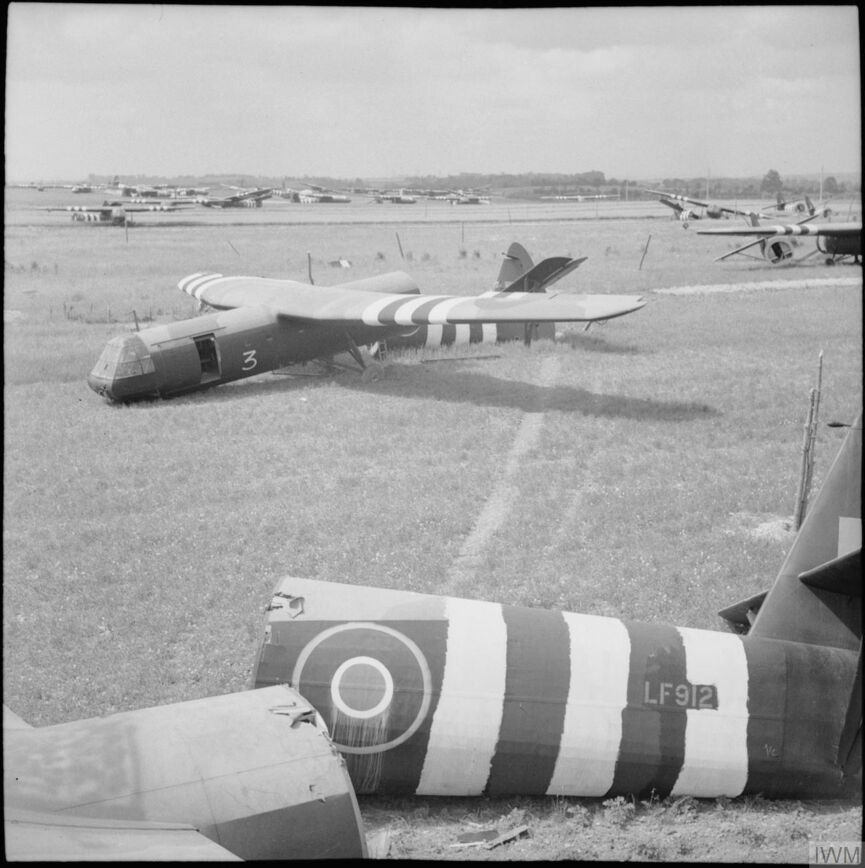
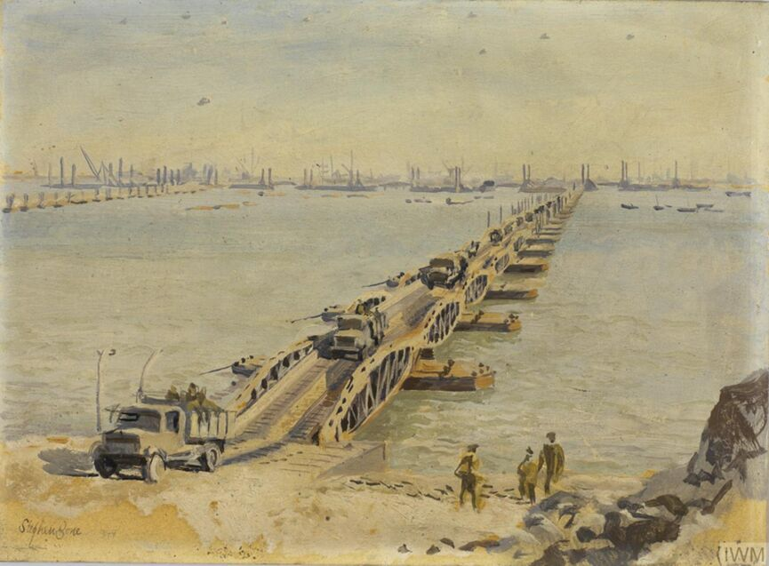
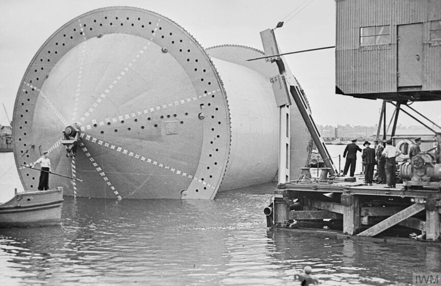

Gold
Missionen
Missionen på Gold Beach var at indtage stranden hurtigst muligt, derefter skulle de skabe kontakt med de
Canadiske styrker mod øst og de Amerikanske styrker mod vest. Det lykkedes dem at indtage stranden hurtigt
samt
møde de Canadiske styrker, dog etablerede de ikke kontakt med de Amerikanske styrker.
Efter at have skabt kontakt med de andre styrker, var planen at nå frem og indtage Bayeux samt afskærer
hovedvejen N13. De nåede
også frem til udkanten af Bayeux ud på aftenen men indtog dog først byen dagen efter. Byen kunne de indtage
uden
de helt store kampe, og derfor står byen stadig i dag som den gjorde den gang.
Teknologier
Landgangsfartøjer:
Tusindvis as landgangsfartøjer blev brugt til at transportere mænd og udstyr over den Engelske kanal på
D-dag.
Det var alt for små angrebs landgangsfartøjer til store landgangsskibe. Andre landgangsfartøjer havde våben
eller raketter monteret på dæk.
Disse landgangsfartøjer betød at de Allierede kunne få tropper og tungt udstyr
i land, så som kampvogne, på de stærke oprustede strande som ikke var tiltænkt at de skulle modtage
forsyninger.
Fordi udstyr kunne bringes direkte op på stranden, var landgangsfartøjerne en kortsigtet løsning
til problemet med at sikre havne. Selvom landgangsfartøjer var blevet udviklet tidligere, var det kun på
D-dag
de blev brugt på sådan en skala.

Horsa Svævefly:
Horsa svævefly blev først produceret i 1942, og var et vigtigt bidrag for de luftbårne angreb. På D-dag blev
de brugt på en uforudsigelig skala til at transportere tropper og forsyninger til Normandiet. De blev
trukket af et bombefly indtil de kunne svæve til landingsområdet hvor forsyningerne kunne hentes.
Svæveflyene transporterede tungere forsyninger og udstyr som ikke kunne leveres via faldskærmsfald og når
det ikke var muligt at bruge større transportfly. Svæveflyene var primært lavet af træ og stof og svære at
styre. De gik ofte i stykker under landingen især på improviserede landinger.

Morbær Havne:
Efter D-dag skulle de allierede fortsat opbygge og have forstærkninger af mænd og forsyninger i Normandiet
for at opretholde invasionens momentum. Tidligere erfaringer havde lært de allierede på den hårde måde,
vigtigheden af at sikre havne, for at kunne færge mænd og forsyninger.
Planlæggerne af (”Overlord”) forslog at lave to kunstige havne med kodenavnet (”Mulberries”), ved at synke forældede skibe (”Corncobs”) og større
beton strukturer (”Phoenixes”). Tilføjelsen af flydende veje og moler (”Whales”) ville tillade dem at
anvende strandkanten som en improviseret havn.

PLUTO:
PLUTO er en forkortelse af ”Pipeline under the ocean”, og supplerede petroleum fra Storbritannien til Europa via et
netværk af rørledninger under vandet bestående af fleksible rør. Det gav de allierede styrker nok petroleum til at tanke
fly og køretøjer og til at vedligeholde momentum af deres fordel.
To PLUTO rørledninger løb fra Isle of Wight til
Port-en-Bessin, som ligger mellem Omaha og Gold Beach. De 3-inch (7.62 cm) brede rør var viklet rundt om flydende spoler
kaldt ”conundrums”, som kan ses på billedet neden under, og så spolet/rullet ud over den Engelske kanal.
